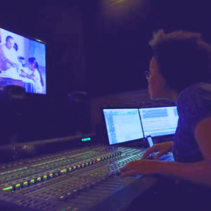

Funções / Mixagem e efeitos sonoros
As informações de cada perfil são de responsabilidade das profissionais.
Você quer conhecer profissionais de quais estados?
CARREGANDO ...
Catarina Apolonio (CE/PE)
Catarina Apolonio
36 anos | Fortaleza (CE) e Recife (PE)
catapolonio@gmail.com
Catarina Apolonio é recifense, formada em Som pela Escuela Internacional de Cine y TV de Cuba e em Comunicação Social RTV pela UFPE. Trabalha com pós-produção de som e imagem no Brasil e América Latina. Entre seus trabalhos mais conhecidos estão a edição de som para o filme "O Som ao Redor" (de Kléber Mendonça Filho) e edição de ambientes e efeitos para "Prófugos" (série do diretor chileno Pablo Larraín para a HBO Latina). Atualmente, também trabalha como técnica de gravação e operação de áudio no curso de Música da Universidade Federal do Ceará.
http://www.imdb.com/name/nm3569920/?ref_=fn_al_nm_1
Outras atividades de Catarina Apolonio
Edição
Amostra de vídeo
 Victória Moreira (SP)
Victória Moreira (SP)
Victória Moreira
21 anos | Osasco (SP)
victoria.mslopes@gmail.com
Victória Moreira, 21 anos, estudante de rádio, TV e internet da faculdade Cásper Líbero. Experiência com os softwares: Illustrator, Photoshop, Premiere, After Effects e Audition.